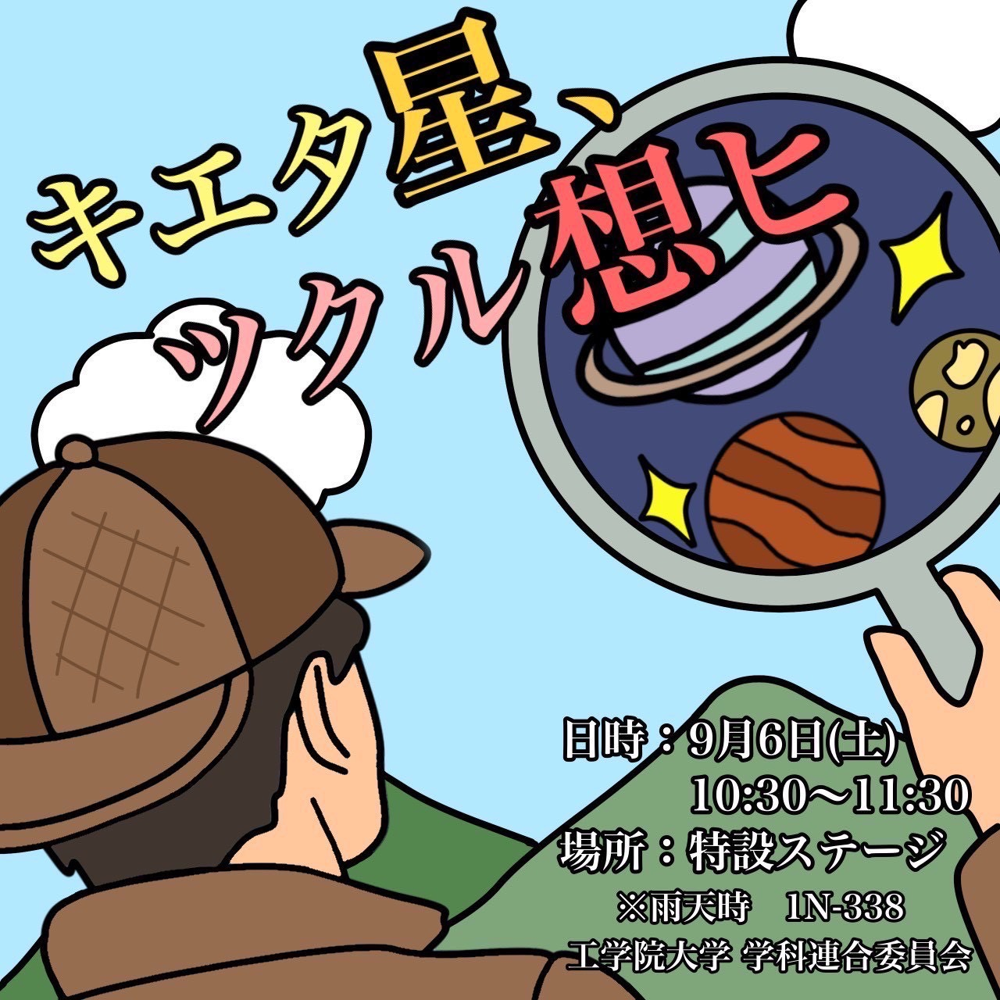
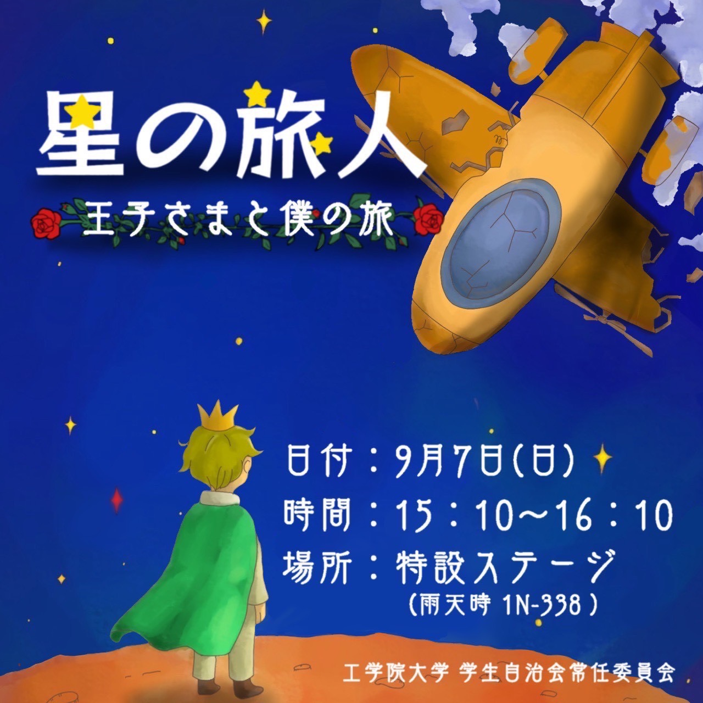

ステージ企画

キエタ星、ツクル想ヒ
【学科連合委員会】
宇宙を流れる天の川、そこにある夏の大三角、アルタイル、ベガ、デネブのうち、デネブが突如として消える事件が発生した。
途中で謎の人物が出てきて、事件が予想不能の展開に…？この事件の真相を解き明かすために名探偵シャーロック・アリスと助手シレーナ・ヒルベルトが天の川へ調査に向かう！
ともに真相を追って宇宙の謎を解き明かそう！

星の旅人 ~王子さまと僕の旅~
【学生自治会常任委員会】
宇宙を旅する旅客機の操縦士である僕は、突如現れた盗賊の襲撃により、乗客とともに未知の惑星へと不時着する。その星で、僕は身に覚えのない罪を着せられ、投獄されてしまう。
牢獄の中で出会ったのは、一人の不思議な星の王子さま。 彼が捕らえられた本当の理由とは？そして、僕たちは一緒に大切なものを探す旅に出ることになる。
さあ、あなたもこの旅に出てみませんか？
アカペラサークル-Σ-
こんにちは！アカペラサークル-Σ-です。 4月に新1年生を迎え、現在では60人程で日々アカペラの活動に励んでいます！ ♪今回、特設ステージと第二ステージでアカペラを演奏させていただきます！
それぞれ特色のある、声のみの美しいハーモニーをぜひお楽しみください！それでは当日ステージにて皆様をお待ちしております！
音楽部＆K.P.F.R部
工学院大学文化会音楽部＆K.P.F.R部です！2つとも軽音楽部です！今年もこの2団体で協力してステージライブを行っていきます！
いつもは音楽部はいぶきホールやライブハウスで、K.P.F.R部は他大学のサークルと一緒にライブを行っています！そちらも興味があったらぜひ遊びに来てください！八王子祭楽しみましょう！
工学院大学文化会吹奏楽部
こんにちは！工学院大学文化会吹奏楽部です！今回は特設ステージにて"ウィーアー！"、"アンダー・ザ・シー"、"ディープ・パープル・メドレー"、"銀河鉄道 999"を演奏します。
1度は聞いたことがある曲、まだまだ暑い日が続く今にぴったりな曲たちです！一緒に盛り上がりましょう！次のコンサートは9/14(日)です。ぜひどちらも遊びに来てくださいね！
READY
ストリートダンスサークルのREADYです！ READYの普段の活動は文化祭に向けて練習をしたり自分たちでチームを作って練習したものをイベントで披露しあったりしています！
今回の八王子祭ではHIPHOPの他LOCKやBREAK、GIRLSなどさまざまなジャンルのダンスを披露します！ぜひ見にきてください！
マジシャンズソサエティ
マジシャンズソサエティです！ようこそ、奇跡と幻想の世界へ！我々はマジックとジャグリングであっ！と驚けるようなパフォーマンスをお届けします。見る人の心を奪うマジックを日々研究・練習しています。
学園祭では、目の前で繰り広げられる不思議な現象に、あなたもきっと驚きと笑顔が止まらないはず！！ぜひ、私たちのステージへお越しください！
開催スケジュール
詳細なタイムスケジュールは後日発表いたします。
注意事項
・天候や諸事情により、内容やスケジュールが変更になる場合があります。
・観覧中は他の方のご迷惑となる行為はお控えください。
・撮影・録音についてはスタッフの指示に従ってください。
・最新情報は公式SNSでお知らせします。